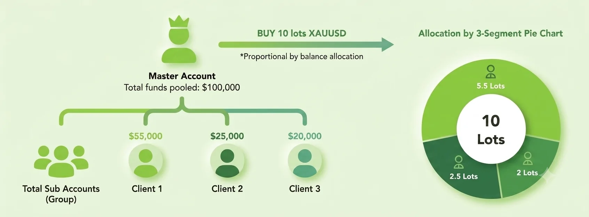

Trading Tools
MAM Account
Oversee multiple client accounts from one master account with flexible allocation, clear reporting and KOS Markets trading infrastructure.
MAM Account Overview
What is MAM
MAM means Multi-Account Manager. It lets professional money managers place trades from one master account and allocate them across linked client accounts.
With a KOS Markets MAM account, managers can trade Forex, Metals, Commodities, Indices and Stock CFDs while clients retain visibility over account activity.

Why choose a MAM Account?
Practical Structure
MAM technology helps money managers run one strategy across multiple accounts while retaining control over allocation, monitoring and reporting.
Trade efficiently
Place one trade and allocate it across linked sub-accounts according to the selected model.
Customize allocation
Use flexible allocation methods such as lot, percentage, balance or equity-based distribution.
Monitor clearly
Review activity, performance and client-level trading data through a structured workflow.
Account Structure
MAM Account Characteristics
Two layers work together: the master account handles trading decisions, while client accounts stay linked for allocation and monitoring.
MAM Master Account
- Open trades at once on linked client accounts
- Choose allocation rules for varied account sizes
- Set commissions, profit sharing and management fees
- Access account overview and reporting tools
MAM Client Accounts
- Funds remain in each client account
- Clients can monitor trades and account performance
- Deposits and withdrawals stay client-account based
- Allocation follows the agreed master setup
Benefits
Benefits of MAM with KOS Markets
Build a scalable account management setup with flexible allocation and access to global CFD markets.
Flexible Allocation
Allocate trades by equity, balance, percentage, lots or other suitable account rules.
Real-time Monitoring
Track trading activity, account performance and allocation behavior with clear visibility.
Multi-asset Trading
Trade Forex, Metals, Commodities, Indices and Stock CFDs from one central setup.
Fast Execution
Use KOS Markets trading infrastructure for responsive account management workflows.
Transparent Reporting
Keep managers and clients aligned with clearer account-level monitoring and reporting.
Ready to manage multiple accounts?
Manage multiple accounts with KOS Markets
Contact KOS Markets to discuss MAM access, allocation setup and platform requirements for professional account management.